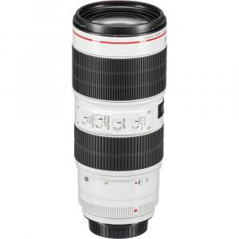

Lensa Canon EF 70-200mm f/2.8 L IS II USM

Rp 450.000 / hari
Rp 900.000 / 3 hari
Sewa 2 hari GRATIS 1 hari
1 Hari = 24 Jam
Deskripsi Produk
lensa telephoto zoom profesional dari Canon dengan dudukan EF, dirancang untuk kamera DSLR. Lensa ini memiliki rentang fokus 70mm hingga 200mm dengan bukaan konstan f/2.8, sehingga mampu menghasilkan foto tajam dengan efek blur (bokeh) yang halus, bahkan dalam kondisi minim cahaya.